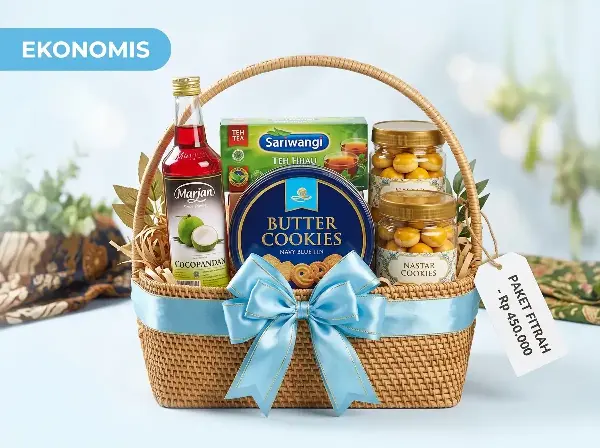

Menjelang Hari Raya Idulfitri, tradisi mengirimkan parcel atau hampers Lebaran menjadi salah satu wujud silaturahmi yang paling dinanti. Sebuah bingkisan yang dipilih dengan pertimbangan matang mampu menyampaikan rasa hormat, kepedulian, dan kehangatan yang mendalam. Sebaliknya, salah memilih isi atau mengabaikan ketahanan kemasan dapat menimbulkan rasa canggung bila toples kue pecah di perjalanan.
1. Kenali Siapa Penerima Parcel Anda
Langkah pertama yang paling krusial adalah memetakan siapa yang akan menerima hantaran Anda. Kebutuhan dan persepsi nilai setiap penerima sangat berbeda:
A. Orang Tua & Calon Mertua
Untuk orang tua atau calon mertua, kesan sopan, rapi, dan berkualitas tinggi adalah prioritas. Hindari kue berbahan pengawet atau biskuit curah. Pilihlah nastar butter Wisman yang bertekstur lembut (mudah dikunyah) dan madu hutan murni yang bermanfaat bagi kesehatan. Kemasan hardbox tertutup lebih mencerminkan kesungguhan hati.
B. Keluarga Besar & Tetangga Sekitar
Bila parcel ditujukan untuk rumah keluarga yang ramai dikunjungi cucu dan kerabat, pilihlah paket hantaran keranjang rotan yang bervolume cukup besar. Kombinasi kaleng biskuit aneka rasa, sirup buah manis, dan wafer kaleng akan sangat berguna disajikan di meja tamu saat hari raya.
C. Rekan Bisnis & Stakeholder Korporat
Untuk atasan kantor, pimpinan institusi, maupun klien B2B, packaging harus mencerminkan profesionalitas. Hardbox flat magnetik bernuansa navy atau hitam dengan branding sleeve logo perusahaan Anda adalah pilihan paling elegan. Lengkapi dengan suvenir berguna seperti tumbler LED pintar atau reed diffuser aromaterapi meja kerja. Lihat pilihan lengkap di halaman Parcel Korporat B2B kami.
2. Menentukan Alokasi Anggaran Realistis
Agar pengeluaran Anda tetap terkendali tanpa mengurangi kualitas hantaran, berikut adalah acuan alokasi anggaran yang umum digunakan:
| Kategori Anggaran | Rentang Harga | Jenis Wadah | Isi Ideal | Contoh Paket |
|---|---|---|---|---|
| Ekonomis Hemat | Rp 275.000 – Rp 450.000 | Keranjang Rotan / Box Kraft | 2 Toples Kue + Biskuit Kaleng + Sirup | Paket Fitrah |
| Korporat B2B | Rp 500.000 – Rp 750.000 | Rigid Flat Box + Custom Sleeve | 2 Kue Kering + Kurma Sukari + Suvenir Flask | Eksekutif Sapphire |
| Premium VIP | Rp 850.000 – Rp 1.500.000+ | Hardbox Beludru / Box Akrilik | Kue Wisman Kaca + Sparkling Juice + Teh Artisan | Paket Al-Karim |

3. Perhatikan Kualitas & Masa Kedaluwarsa Isi Paket
Hal yang paling sering dikeluhkan oleh penerima parcel adalah toples kue yang sudah hampir kedaluwarsa atau berbau tengik. Sebelum memutuskan membeli parcel Lebaran, pastikan Anda menanyakan:
- Tanggal kedaluwarsa (Exp Date): Pastikan seluruh makanan dan minuman memiliki sisa masa simpan minimal 6 bulan saat diterima.
- Sertifikasi Halal & BPOM: Produk harus memiliki legalitas edar yang jelas demi ketenangan penerima saat mengonsumsinya.
- Segel toples: Toples kue kering sebaiknya memiliki lapisan seal vakum aluminium atau sealing band plastik anti-udara agar udara lembap tidak merusak kerenyahan kue.
Semua produk dalam katalog kami telah melalui kurasi ketat dan memiliki sertifikasi halal BPOM resmi. Anda juga bisa melihat foto nyata produk di halaman Portofolio kami.
Parcel Halal & BPOM Terjamin
Seluruh isi parcel Nirmala sudah tersertifikasi — tenang kirim ke siapa saja tanpa khawatir.
4. Memilih Jenis Kemasan: Hardbox vs Keranjang vs Akrilik
Bahan kemasan bukan hanya soal estetika, melainkan juga menyangkut keamanan ekspedisi:
- Rigid Hardbox: Pilihan paling aman untuk pengiriman ke luar kota. Struktur papan greyboard tebal mampu menahan tumpukan kardus saat proses ekspedisi.
- Keranjang Rotan: Memiliki nilai tradisi yang kental dan sangat indah diserahkan langsung secara personal saat berkunjung silaturahmi.
- Box Akrilik: Pilihan paling modern dan mewah. Menampilkan isi parcel secara 360 derajat. Sangat cocok untuk paket bespoke VIP dengan hiasan bunga kering.
5. Waktu Pemesanan Ideal Menjelang Idulfitri
Menjelang hari raya, volume pengiriman di seluruh jasa ekspedisi nasional mengalami lonjakan drastis hingga 300%. Berikut panduan waktu booking yang aman:
- H-30 hingga H-20: Waktu ideal bagi korporasi dan perusahaan untuk finalisasi approval desain sleeve logo dan rincian penawaran faktur pajak.
- H-14 hingga H-10: Batas aman pengiriman antar-kota luar provinsi agar terhindar dari kepadatan jalur penyeberangan dan arus mudik.
- H-7: Batas pengiriman same-day instan untuk wilayah dalam kota Jabodetabek.
Pertanyaan Umum (FAQ)
Pertanyaan yang sering ditanyakan seputar pemilihan parcel Lebaran:
Budget ideal bergantung pada profil penerima. Untuk keluarga dan tetangga cukup Rp 275.000–Rp 450.000. Untuk rekan bisnis dan korporat disarankan Rp 500.000–Rp 750.000. Untuk mertua atau klien VIP, alokasikan Rp 850.000–Rp 1.500.000. Lihat detail di katalog paket kami.
Hardbox lebih aman untuk pengiriman ekspedisi jarak jauh karena struktur greyboard tebalnya tahan tumpukan. Keranjang rotan lebih cocok diserahkan langsung saat silaturahmi dan memiliki nilai estetika tradisi yang kental. Keduanya tersedia di layanan Parcel Custom kami.
Waktu ideal pemesanan adalah H-30 hingga H-20 untuk korporasi besar, H-14 hingga H-10 untuk pengiriman antar kota, dan H-7 untuk pengiriman same-day dalam kota Jabodetabek.
Ya, semua produk makanan dan minuman dalam parcel Parcel Lebaran telah memiliki sertifikasi Halal MUI dan izin edar BPOM yang valid, sehingga aman dikonsumsi oleh seluruh keluarga Muslim maupun non-Muslim.
Ya! Parcel Lebaran menyediakan layanan Parcel Custom dengan branding sleeve logo perusahaan, pilihan warna kemasan, dan kartu ucapan korporat. Hubungi tim kami melalui WhatsApp untuk konsultasi desain.
6. Kesimpulan & Rekomendasi
Parcel Lebaran adalah media penyampai ketulusan hati. Dengan merencanakan anggaran secara cermat, memilih vendor yang transparan, dan memastikan kualitas bahan halal, hantaran Anda akan disambut dengan senyuman hangat dan kenangan manis oleh penerima.
Ingin Konsultasi Parcel Sesuai Anggaran Anda?
Tim kurasi Parcel Lebaran siap membantu menyusunkan paket parcel yang paling pas dengan preferensi dan anggaran Anda.